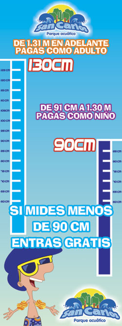
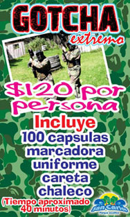

|

Diversión sinfin!
Abierto las 24 hrs. los 365 días del año
Ven con tu familia y amigos a disfrutar de cristalinas aguas termales de
manantial con una
temperatura constante de 36ºC
Para una cómoda estancia contamos con hospedaje en cabañas y habitaciones equipadas.
Contamos con un nuevo conjunto de habitaciones para tu descanso
En Parque Acuático San Carlos, la diversión no cuesta mas…chécate nuestras excelentes tarifas, y lo mejor de
todo…la diversión ya esta incluida, y nunca termina…!!!
Entrada general (Temporada Alta)
Adultos $ 90.00
Niños $ 60.00
Temporada alta aplica en Sábados, domingos, días festivos, Semana Santa, puentes y temporada vacacional.
Entrada general (Temporada Baja)
Adultos $ 80.00
Niños $ 60.00
OJO: Cuando nos visites en Parque Acuático San Carlos, no olvides ubicar nuestros divertimetros, porque Si mides
menos de 90 cm entras GRATIS!!! , de 91 cm a 130 cm pagas como niño, de 131 cm en adelante pagas como adulto.
La diversión en Parque Acuatico San Carlos es para todos:
Personas con capacidades diferentes entran gratis.
Adultos mayores reciben un excelente descuento, pero debes mostrar tu identificación de INAPAM o INSEN en
ventanilla para validar el descuento.
Si quieres que la diversión dure día y noche, no te olvides de pedir tu boleto de:
CAMPAMENTO (Temporada Alta)
Adultos $ 170.00
Niños $ 110.00
Temporada alta aplica en Sábados, domingos, días festivos, Semana Santa, puentes y temporada vacacional.
CAMPAMENTO (Temporada Baja)
Adultos $ 160.00
Niños $ 110.00
Con ingreso al parque las 24 horas, El precio solo incluye el acceso al parque y no el equipo para acampar.
Y si eres amante de la adrenalina no te olvides de conocer nuestra zona extrema…compra tu acceso para disfrutar
del mas divertido y extremo…
GOTCHA…!!! 
$ 120.00 por persona
Incluye equipo completo (uniforme, careta y pistola con 100 balas
En caso de traer el equipo completo solo se cobrara $60.00 por derecho de campo
ACEPTAMOS TARJETAS VISA Y MASTERCARD EN HORARIO DE 9:00AM A 5:00PM
|